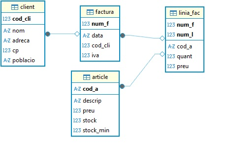
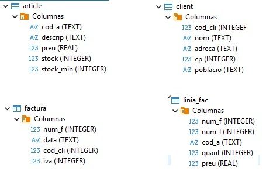
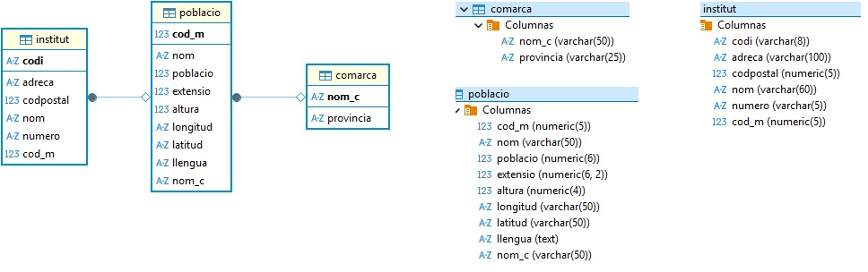
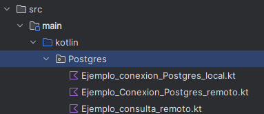

Operaciones sobre la BD¶
En JDBC (Java Database Connectivity), las operaciones sobre la base de datos se realizan utilizando los siguientes objetos y métodos:
-
Connection, como ya se explicó en el apartado anterior, establece el canal de comunicación con el SGBD (PostgreSQL, MySQL, etc.)
-
Los objetos PrepareStatement y CreateStatement se utlizan para enviar consultas SQL desde tu programa hacia la base de datos, pero se usan de forma distinta y tienen ventajas diferentes.
-
ResultSet es un objeto que contiene el resultado de una consulta SQL, y permite recorrer fila a fila el conjunto de resultados, accediendo a cada campo por nombre o por posición.
-
Los métodos executeQuery() y executeUpdate() se utilizan para ejecutar sentencias SQL, pero se usan en contextos diferentes, dependiendo de si la consulta devuelve resultados o no.
Peticiones a la BD
Cuando una aplicación se conecta a una base de datos, necesita ejecutar sentencias SQL desde el código. En JDBC (Java/Kotlin), existen dos métodos principales para ello: executeQuery() y executeUpdate().
Ambos permiten enviar instrucciones SQL al gestor de base de datos, pero se usan en situaciones diferentes:
| Método | Uso principal | Tipo de sentencia SQL | Resultado que devuelve |
|---|---|---|---|
| executeQuery() | Realizar consultas | SELECT | Objeto ResultSet con los datos consultados |
| executeUpdate() | Realizar modificaciones | INSERT, UPDATE, DELETE, DDL (CREATE, DROP, etc.) | Un entero con el número de filas afectadas |
execute()
El método execute() en JDBC se utiliza principalmente en los siguientes casos:
- Cuando no se sabe de antemano qué tipo de sentencia SQL se va a ejecutar o si la consulta puede ser tanto de consulta como de modificación de datos.
- Para ejecutar sentencias SQL que pueden devolver varios resultados.
- En situaciones donde se necesita una gestión flexible de la ejecución, ya que execute() devuelve un booleano:
- true si el resultado es un ResultSet (SELECT).
- false si el resultado es un entero (INSERT, UPDATE, DELETE,CREATE, ALTER)
PrepareStatement VS CreateStatement
| Si necesitas... | Usa... |
|---|---|
| Consultas sin parámetros | CreateStatement |
| Consultas con datos del usuario | PrepareStatement |
| Seguridad frente a inyecciones SQL | PrepareStatement |
| Ejecutar muchas veces con distintos valores | PrepareStatement |
| Crear tablas o sentencias SQL complejas que no cambian | CreateStatement |
Diferencia en la compilación entre Statement y PreparedStatement
Cada vez que envías una sentencia SQL al motor de base de datos, el motor debe hacer varios pasos:
- Parsear la consulta → comprobar que la sintaxis SQL es correcta.
- Compilar → convertir la consulta en un plan de ejecución interno (cómo buscar los datos, qué índices usar, etc.).
- Ejecutar → obtener los resultados.
🔹 Con Statement
Cada vez que llamas a executeQuery() o executeUpdate(), el SQL completo se envía como texto:
val stmt = conn.createStatement()
stmt.executeQuery("SELECT * FROM clientes WHERE ciudad = 'Valencia'")
stmt.executeQuery("SELECT * FROM clientes WHERE ciudad = 'Madrid'")
En este caso, el motor parsea y compila de nuevo las dos consultas, aunque solo cambia el valor de 'Valencia' a 'Madrid'.
🔁 Es decir, se repite todo el trabajo de compilación cada vez, lo que reduce el rendimiento si haces muchas consultas parecidas.
🔹 Con PrepareStatement
Aquí, el SQL se envía una sola vez con parámetros (?):
val pstmt = conn.prepareStatement("SELECT * FROM clientes WHERE ciudad = ?")
pstmt.setString(1, "Valencia")
pstmt.executeQuery()
pstmt.setString(1, "Madrid")
pstmt.executeQuery()
El motor solo compila la consulta una vez, y después reutiliza el mismo plan de ejecución cambiando solo el valor del parámetro.
⚡ Esto ahorra tiempo y recursos, sobre todo cuando repites muchas veces la misma consulta con diferentes datos (por ejemplo, en bucles o inserciones masivas).
🔹CRUD - SQlite¶
Kotlin - Instrucciones
Dentro del paquete SQlite del proyecto BDRelacionales, ya creado y conectado a la BD Tienda.sqlite, ubicada en la carpeta de recursos, incluiremos los ejemplos de este apartado.
Estos ejemplos mostrarán cómo gestionar datos desde una aplicación en Kotlin conectada a una base de datos relacional ligera, utilizando las tablas article, client, factura y linia_fac, tal y como se aprecia en el modelo relacional de la siguiente imagen.
Tienda.sqlite
| Modelo Relacional | Datos | Paquete SQLite |
|---|---|---|
|  |  |  |
Operaciones CRUD
Las operaciones más habituales para modificar los datos en una base de datos relacional son las conocidas como CRUD:
- CREATE: Permite añadir nuevos registros a una tabla.
- READ: Permite consultar registros existentes.
- UPDATE: Permite modificar los valores de uno o varios registros existentes.
- DELETE: Permite eliminar registros de una tabla.
CREATE (INSERT)
Ejemplo_Insert.kt: Este fragmento añade un nuevo articulo "00001" a la tabla articles
package SQLite
import java.sql.DriverManager
fun main() {
val dbPath = "src/main/resources/Tienda.sqlite"
val dbFile = java.io.File(dbPath)
val url = "jdbc:sqlite:${dbFile.absolutePath}"
DriverManager.getConnection(url).use { conn ->
val sql = "INSERT INTO article (cod_a, descrip) VALUES (?, ?)"
//conn.prepareStatement(sql)
conn.prepareStatement(sql).use { stmt ->
stmt.setString(1, "00001")
stmt.setString(2, "articulo de prueba 1")
stmt.executeUpdate()
}
}
}
UPDATE
Ejemplo_Update.kt: Este código actualiza la descripción del artículo "00001"
package SQLite
import java.sql.DriverManager
fun main() {
val dbPath = "src/main/resources/Tienda.sqlite"
val dbFile = java.io.File(dbPath)
val url = "jdbc:sqlite:${dbFile.absolutePath}"
DriverManager.getConnection(url).use { conn ->
val sql = "UPDATE article SET descrip = ? WHERE cod_a = ?"
conn.prepareStatement(sql).use { stmt ->
stmt.setString(1, "descripción nueva")
stmt.setString(2, "00001")
stmt.executeUpdate()
}
}
}
DELETE
Ejemplo_Delete.kt: Este fragmento elimina el articulo "00001"
package SQLite
import java.sql.DriverManager
fun main() {
val dbPath = "src/main/resources/Tienda.sqlite"
val dbFile = java.io.File(dbPath)
val url = "jdbc:sqlite:${dbFile.absolutePath}"
DriverManager.getConnection(url).use { conn ->
val sql = "DELETE FROM article WHERE cod_a = ?"
conn.prepareStatement(sql).use { stmt ->
stmt.setString(1, "00001")
stmt.executeUpdate()
}
}
}
READ (SELECT)
Ejemplo_select_basico.kt: Consulta la tabla article.
package SQLite
import java.io.File
import java.sql.DriverManager
fun main() {
val dbPath = "src/main/resources/Tienda.sqlite"
val dbFile = File(dbPath)
println("Ruta de la BD: ${dbFile.absolutePath}")
val url = "jdbc:sqlite:${dbFile.absolutePath}"
DriverManager.getConnection(url).use { conn ->
val sql = "SELECT cod_a, descrip, preu, stock, stock_min FROM article"
conn.prepareStatement(sql).use { stmt ->
stmt.executeQuery().use { rs ->
println("Artículos disponibles:")
println("Código\tDescripción\tPrecio\tStock\tStock Mínimo")
while (rs.next()) {
val codA = rs.getString("cod_a")
val descrip = rs.getString("descrip")
val preu = rs.getDouble("preu")
val stock = rs.getInt("stock")
val stockMin = rs.getInt("stock_min")
println("$codA\t$descrip\t$preu\t$stock\t$stockMin")
}
}
}
}
}
Ejemplo_join.kt: Este ejemplo obtiene las líneas de factura con nombre del artículo y ordenado por numero de factura y línea.
package SQLite
import java.sql.DriverManager
fun main() {
val dbPath = "src/main/resources/Tienda.sqlite"
val dbFile = java.io.File(dbPath)
val url = "jdbc:sqlite:${dbFile.absolutePath}"
DriverManager.getConnection(url).use { conn ->
val sql = """
SELECT lf.num_f, lf.num_l, lf.cod_a, a.descrip, lf.quant, lf.preu
FROM linia_fac lf
JOIN article a ON lf.cod_a = a.cod_a
ORDER BY lf.num_f, lf.num_l
""".trimIndent()
conn.prepareStatement(sql).use { stmt ->
stmt.executeQuery().use { rs ->
println("Líneas de factura:")
println("Factura | Línea | Artículo | Descripción | Cantidad | Precio")
while (rs.next()) {
val numF = rs.getInt("num_f")
val numL = rs.getInt("num_l")
val codA = rs.getString("cod_a")
val descrip = rs.getString("descrip")
val quant = rs.getInt("quant")
val preu = rs.getDouble("preu")
println("$numF\t$numL\t$codA\t$descrip\t$quant\t$preu")
}
}
}
}
}
🔹Liberación de recursos¶
Cuando una aplicación accede a una base de datos, abre varios recursos internos que consumen memoria y conexiones activas en el sistema:
- La conexión con el servidor de base de datos (Connection)
- Las sentencias SQL preparadas (Statement o PreparedStatement)
- El resultado de la consulta (ResultSet)
Estos recursos no se liberan automáticamente cuando se termina su uso (especialmente en Java o Kotlin con JDBC). Si no se cierran correctamente, se pueden producir problemas como:
- Fugas de memoria
- Bloqueo de conexiones (demasiadas conexiones abiertas)
- Degradación del rendimiento
- Errores inesperados en la aplicación
💡 En Kotlin, puedes usar use {} para cerrar recursos automáticamente al finalizar el bloque, tal y como hemos hecho en los ejemplos anteriores.
Si no utilizas use {} en Kotlin (o try-with-resources en Java), entonces debes cerrar manualmente cada uno de los recursos abiertos (ResultSet, Statement y Connection) usando .close(), y normalmente deberías hacerlo dentro de un bloque finally para garantizar su cierre incluso si ocurre un error. El orden correcto de cierre es del más interno al más externo.
👉 Los siguientes ejemplos muestran como cerrar recursos abiertos sin use(), de forma manual y con el bloque try-catch-finally
Ejemplo_cierre_manual.kt: Cierra los recurso de forma manual con close()
package SQLite
import java.sql.DriverManager
import java.sql.Connection
import java.sql.PreparedStatement
import java.sql.ResultSet
fun main() {
val dbPath = "src/main/resources/Tienda.sqlite"
val dbFile = java.io.File(dbPath)
val url = "jdbc:sqlite:${dbFile.absolutePath}"
val conn: Connection = DriverManager.getConnection(url)
val sql = "SELECT cod_a, descrip, preu, stock, stock_min FROM article"
val stmt: PreparedStatement = conn.prepareStatement(sql)
val rs: ResultSet = stmt.executeQuery()
println("Artículos:")
println("Código\tDescripción\tPrecio\tStock\tStock mín.")
while (rs.next()) {
val codA = rs.getString("cod_a")
val descrip = rs.getString("descrip")
val preu = rs.getDouble("preu")
val stock = rs.getInt("stock")
val stockMin = rs.getInt("stock_min")
println("$codA\t$descrip\t$preu\t$stock\t$stockMin")
}
rs.close()
stmt.close()
conn.close()
}
Ejemplo_cierre_try_catch.kt: Cierra los reursos con try-catch-finally
package SQLite
import java.sql.Connection
import java.sql.DriverManager
import java.sql.PreparedStatement
import java.sql.ResultSet
fun main() {
val dbPath = "src/main/resources/Tienda.sqlite"
val dbFile = java.io.File(dbPath)
val url = "jdbc:sqlite:${dbFile.absolutePath}"
var conn: Connection? = null
var stmt: PreparedStatement? = null
var rs: ResultSet? = null
try {
conn = DriverManager.getConnection(url)
val sql = "SELECT cod_a, descrip, preu, stock, stock_min FROM article"
stmt = conn.prepareStatement(sql)
rs = stmt.executeQuery()
println("Artículos:")
println("Código\tDescripción\tPrecio\tStock\tStock mín.")
while (rs.next()) {
val codA = rs.getString("cod_a")
val descrip = rs.getString("descrip")
val preu = rs.getDouble("preu")
val stock = rs.getInt("stock")
val stockMin = rs.getInt("stock_min")
println("$codA\t$descrip\t$preu\t$stock\t$stockMin")
}
} catch (e: Exception) {
println("Error al acceder a la base de datos: ${e.message}")
} finally {
try { rs?.close() } catch (e: Exception) { /* Ignorar */ }
try { stmt?.close() } catch (e: Exception) { /* Ignorar */ }
try { conn?.close() } catch (e: Exception) { /* Ignorar */ }
}
}
🔹CRUD - PostgreSQL¶
Hasta ahora hemos trabajado con ejemplos de operaciones CRUD (Crear, Leer, Actualizar y Borrar) utilizando SQLite, una base de datos ligera, fácil de usar y sin necesidad de servidor, ideal para iniciarse en el acceso a datos desde Kotlin.
Sin embargo, en entornos reales y profesionales, lo más habitual es trabajar con sistemas de gestión de bases de datos más potentes y completos, como PostgreSQL.
A continuación, aplicaremos lo aprendido en SQLite, pero ahora trabajando con PostgreSQL en dos contextos distintos:
- Base de datos remota: alojada en un servidor accesible mediante una dirección IP y credenciales.
- Base de datos local: replicada en un contenedor Docker, lo que resulta ideal para pruebas, desarrollo y aprendizaje en un entorno controlado.
En ambos casos utilizaremos la misma base de datos, llamada geo_ad. Su versión remota estará disponible desde cualquier ubicación, mientras que la local se generará a partir de ella siguiendo unas instrucciones que se os facilitarán.
Esquema de la BD geo_ad
| Modelo Relacional - Datos | Paquete Postgres |
|---|---|
|  |  |
Kotlin - Instrucciones
Dentro del paquete Postgres del proyecto BDRelacionales, incluiremos los ejemplos de este apartado. Estos ejemplos mostrarán cómo gestionar datos desde una aplicación en Kotlin conectada a una base de datos relacional, utilizando las tablas institut, poblacio y comarca, tal y como se aprecia en el modelo relacional de la siguiente imagen.
Configuración de Dependencias (Gradle)
Lo primero será incluir las dependencia necesarias en build.gradle.kts
// build.gradle.kts (para PostgreSQL)
dependencies {
implementation("org.postgresql:postgresql:42.6.0")
}
🗄️Servidor remoto¶
La base de datos geo_ad se encuentra en una máquina externa, por lo que se comporta como un recurso compartido en la nube. Para acceder a ella necesitamos establecer una conexión de red utilizando parámetros como los siguientes:
Datos de conexión al servido remoto
Servidor (host): 89.36.214.106
Port: 5432 (es el puerto por defecto)
Usuari: geo_ad
Contrasenya: geo_ad
Base de dades: geo_ad
Ejemplo_conexion_Postgres_remota.kt
package Postgres
import java.sql.DriverManager
object DatabaseRemota {
private const val URL = "jdbc:postgresql://89.36.214.106:5432/geo_ad"
private const val USER = "geo_ad"
private const val PASSWORD = "geo_ad"
fun getConnection() = DriverManager.getConnection(URL, USER, PASSWORD)
}
Operaciones CRUD
Una vez conectados a la BD, ya podemos hacer operaciones CRUD sobre ella, utilizando el objeto de conexión correspondiente.
Read (SELECT)
Ejemplo_Select.kt: Consulta todos los institutos
package Postgres
fun main(args: Array<String>) {
val sql = "SELECT * FROM institut"
DatabaseLocal.getConnection().use { conn -> // DatabaseRemota si se conecta al servidor del instituto
conn.prepareStatement(sql).use { stmt ->
stmt.executeQuery().use { rs ->
while (rs.next()) {
print("" + rs.getString(1) + "\t")
println(rs.getString(2))
}
}
}
}
}
Create (INSERT)
Ejemplo_Insert.kt: inserta un istituto de prueba.
package Postgres
fun main(args: Array<String>) {
val sql ="INSERT INTO institut (codi,nom,adreca,numero,codpostal,cod_m) VALUES(?,?,?,?,?,?)"
DatabaseLocal.getConnection().use { conn ->
conn.prepareStatement(sql).use { stmt ->
stmt.setString(1, "00000000")
stmt.setString(2, "IES PRUEBA")
stmt.setString(3, "CASTELLÓN")
stmt.setString(4, "S/N")
stmt.setInt(5, 12560)
stmt.setInt(6, 12040)
stmt.executeUpdate()
}
}
}
Update (UPDATE)
Ejemplo_Update.kt: actualiza el campo nombre del instituto de prueba insertado.
package Postgres
fun main() {
val sql = "UPDATE institut SET nom = ? WHERE codi = ?"
DatabaseLocal.getConnection().use { conn ->
conn.prepareStatement(sql).use { stmt ->
stmt.setString(1, "IES PRUEBA 2")
stmt.setString(2, "00000000")
stmt.executeUpdate()
}
}
}
Delete (DELETE)
Ejemplo_Delete.kt: elimina el instituto de prueba insertado anteriormente.
package Postgres
fun main() {
val sql = "DELETE FROM institut WHERE codi = ?"
DatabaseLocal.getConnection().use { conn ->
conn.prepareStatement(sql).use { stmt ->
stmt.setString(1, "00000000")
stmt.executeUpdate()
}
}
}
🐳 Docker¶
Para poder programar y probar nuestras aplicaciones sin depender de la conexión externa, es muy útil replicar esa base de datos en local. La forma más sencilla y estandarizada de hacerlo es mediante Docker.
- Docker es una plataforma que permite ejecutar aplicaciones dentro de contenedores.
- Un contenedor es como una “caja” que incluye todo lo necesario para que un servicio funcione: sistema operativo reducido, librerías, configuración y la propia aplicación.
- Para bases de datos, existen imágenes oficiales (Postgres, MySQL, MongoDB…) que se pueden levantar en segundos.
Intrucciones para replicar la BD en local (Docker)
Las instrucciones para replicar la base de datos en Docker las podéis encontrar en el siguiente enlace: Instrucciones
🔌 Una vez hemos creada la BD en local ya podemos conectarnos a ella:
Ejemplo_conexion_Postgres_local.kt
package Postgres
import java.sql.DriverManager
object DatabaseLocal {
private const val URL = "jdbc:postgresql://localhost:5432/geo"
private const val USER = "postgres"
private const val PASSWORD = "postgres"
fun getConnection() = DriverManager.getConnection(URL, USER, PASSWORD)
}
Nota
Los ejemplos anteriores de operaciones CRUD, realizados sobre el servidor remoto, son igualmente válidos para el servidor local, ya que la base de datos es la misma.
🔹Data Class¶
Hasta ahora hemos trabajado con bases de datos relacionales utilizando JDBC, construyendo consultas SQL, procesando los resultados con ResultSet y mostrando la información directamente por consola o almacenándola en estructuras básicas como listas o mapas.
Sin embargo, cuando una aplicación crece, se vuelve más cómodo y legible representar cada tabla de la base de datos como una clase del programa, cuyos atributos correspondan a las columnas de esa tabla. En Kotlin, esto se consigue de forma sencilla y elegante utilizando las data classes.
Una data class (o clase de datos) es una clase especial de Kotlin diseñada para almacenar y transportar información. El compilador genera automáticamente métodos útiles como toString(), equals(), hashCode() y copy(), por lo que resulta ideal para representar filas (registros) de una tabla de base de datos.
Su sintáxis básica es:
data class NombreClase(val campo1: Tipo, val campo2: Tipo, ...)
🧩 Ejemplo: representación de una tabla cliente
Supongamos que en la base de datos existe una tabla:
CREATE TABLE cliente (
id INTEGER PRIMARY KEY,
nombre TEXT,
email TEXT
);
Podemos definir la siguiente clase en Kotlin:
data class Cliente(
val id: Int,
val nombre: String,
val email: String
)
Y al realizar una consulta con JDBC:
val clientes = mutableListOf<Cliente>()
val rs = stmt.executeQuery("SELECT * FROM cliente")
while (rs.next()) {
clientes.add(
Cliente(
id = rs.getInt("id"),
nombre = rs.getString("nombre"),
email = rs.getString("email")
)
)
}
En este ejemplo:
- Cada fila del ResultSet se convierte en un objeto Cliente.
- Todos los clientes recuperados se almacenan en una lista tipada (
List<Cliente>). - Posteriormente se pueden mostrar, modificar o procesar con facilidad.
📌 Uso de data class en la BD Geo¶
En este ejemplo replicamos la misma consulta que ya vimos anteriormente para obtener todos los institutos de la base de datos geo_ad alojada en el servidor remoto, pero ahora utilizando un data class en Kotlin.
Esto nos permite representar cada fila del resultado como un objeto de tipo Institut, facilitando el tratamiento, la reutilización y la lectura del código.
Además, almacenamos los resultados en una lista de objetos, lo que nos permite trabajar con ellos de forma más natural dentro de nuestro programa (listar, filtrar, transformar, etc.).
Data Class: Institut
package Postgres
data class Institut(
val codi: String,
val nom: String?,
val adreca: String?,
val numero: String?,
val codpostal: Int?,
val codMunicipi: Int?
)
Ejemplo_dataclass.kt
package Postgres
fun main() {
val sql = "SELECT * FROM institut"
val instituts = mutableListOf<Institut>()
DatabaseRemota.getConnection().use { conn -> // Usa DatabaseRemota si es necesario
conn.prepareStatement(sql).use { stmt ->
stmt.executeQuery().use { rs ->
while (rs.next()) {
val institut = Institut(
rs.getString("codi"),
rs.getString("nom"),
rs.getString("adreca"),
rs.getString("numero"),
rs.getInt("codpostal"),
rs.getInt("cod_m")
)
instituts.add(institut)
}
}
}
}
println("🏫 Institutos encontrados:")
instituts.forEach { println(it) }
}